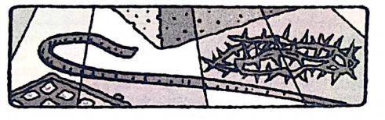

Usomaji wa biblia Yeremia 27

SABATO MCHANA
Somo la Juma Hili: Zaburi 23; Yn. 10:11-15; Zaburi 22; Zab. 89:27-32; Kol. 1:16; Zaburi 2; Ebr. 7:20-28.
Fungu La Kukariri: "Jiwe walilolikataa waashi Limekuwa jiwe kuu la pembeni. Neno hili limetoka kwa Bwana, Nalo ni ajabu machoni petu (Zaburi 118:22, 23).
Zaburi zinashuhudia kuhusu nafsi na huduma ya Kristo. Takriban nyanja zote za kazi Yake katika mpango wa wokovu zinaonekana katika Zaburi. Kwa njia mbalimbali, maisha na kazi ya Kristo vimebainishwa kabla na kutabiriwa ndani yake, mara nyingi kwa usahihi wa ajabu.
Mada zilizofunuliwa katika Zaburi ni pamoja na Uungu wa Kristo, kuwa Kwake mwana, utii Wake, shauku Yake kwa ajili ya hekalu la Mungu, utambulisho Wake kama Mchungaji Mwema, kusalitiwa Kwake, mateso Yake, mifupa Yake kutovunjwa, kifo chake, ufufuo, kupaa, ukuhani na ufalme. Yote yapo, kama ilivyotabiriwa karne nyingi kabla ya Yesu kuja katika mwili.
Si ajabu, kwa mfano, alipokuwa akizungumzia huduma yake, Yesu alielekeza nyuma katika Zaburi alipokuwa akizungumza na wanafunzi njiani kuelekea Emau (Lk. 24:44). Alitaka wapate uthibitisho katika Zaburi kuwa alikwa nani.
Baadhi ya Zaburi zenye utimilifu wa mfano katika Kristo ni pamoja na Zaburi 24, 45, 72, na 101 (Mfalme na Hakimu aliye bora), 88, na 102 (maombi ya mtumishi wa Mungu anayeteseka). Katika Zaburi zote, kupitia maombolezo, shukrani, sifa, na vilio kwa ajili ya haki na ukombozi vya watunga-zaburi, tunaweza kusikia miangwi ya maombi ya Kristo kwa ajili ya wokovu wa ulimwengu.
"Jifunze somo la juma hili kwa maandalizi ya Sabato ya Machi 2.